随见植物
Type something in the input field to search the table for specific notes:
Click the Sort Button to sort the table alphabetically, by the column:
| Binomial Name | Common Name | 中文名 | 分类 | 图片 | Hcm X Scm | Flowers | 备注 / 光照 土壤 水分 肥料 |
|---|---|---|---|---|---|---|---|
| Helianthus annuus 'Red Sun' | Sunflower 'Red Sun' | 红日向日葵 | Outdoor |

|
1.5m X 45cm | Jul-Sep |
Own it!
Superb at the back of borders.
|
| Clivia | Natal lily | 君子兰 | Indoor | 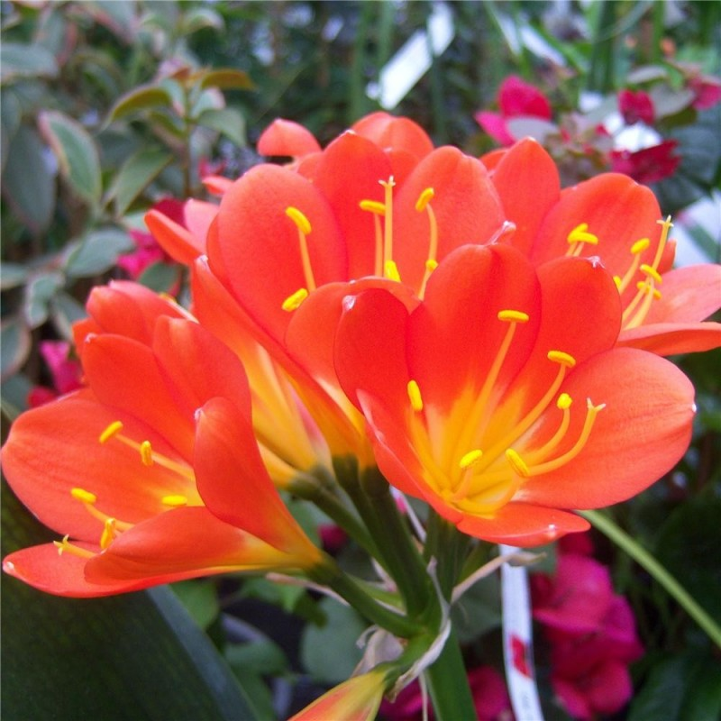 | 50cm X 50cm | Jun - Aug |
Own it!
Natal lily, Clivia miniata, is a fantastic houseplant suitable for a range of indoor situations. It has dark green, strap-shaped leaves, and bears clusters of orange trumpet-shaped blooms with bright yellow anthers, from spring to late-summer.
|
| Crassula ovata | Jade plant | 翡翠木 | Indoor |

|
1.5-2.5m X 1-1.5m | Flower Time |
Own it!
Grow under glass in a loam-based potting compost with added extra grit. Water moderately when in growth, very sparingly when dormant. Apply a balanced liquid fertiliser 2 or 3 times in the growing season.
|
| Phalaenopsis | orchid | 蝴蝶兰 | Indoor |

|
30cm X 30cm | Flower Time |
Own it!
These orchids have been widely bred to produce many free-flowering and easy-to-grow hybrids. They grow
well as houseplants, enjoying the year-round warmth and filtered light in our homes.
|
| Sansevieria trifasciata | Mother in law's tongue, snake plant | 虎尾兰 | Indoor |

|
1m X 30cm | Flower Time |
Own it!
S. trifasciata is a succulent perennial forming a clump of erect, sword-shaped deep green leaves with pale
green transverse bands, with racemes of small, tubular pale green flowers in summer or autumn.
|
| Penstemons | Beard Tongue | 钓钟柳 | Outdoor |

|
0.5-1m X 0.1-0.5m | March to mid-May | These elegant easy-to-grow border plants send up spires of tubular flowers in a range of gorgeous colours. From sky blue to rich plum, deep purple to powdery pink, they flower across the summer months, and like a warm, sunny spot. |
| Erysimum | Wallflower | 糖芥属 | Outdoor | 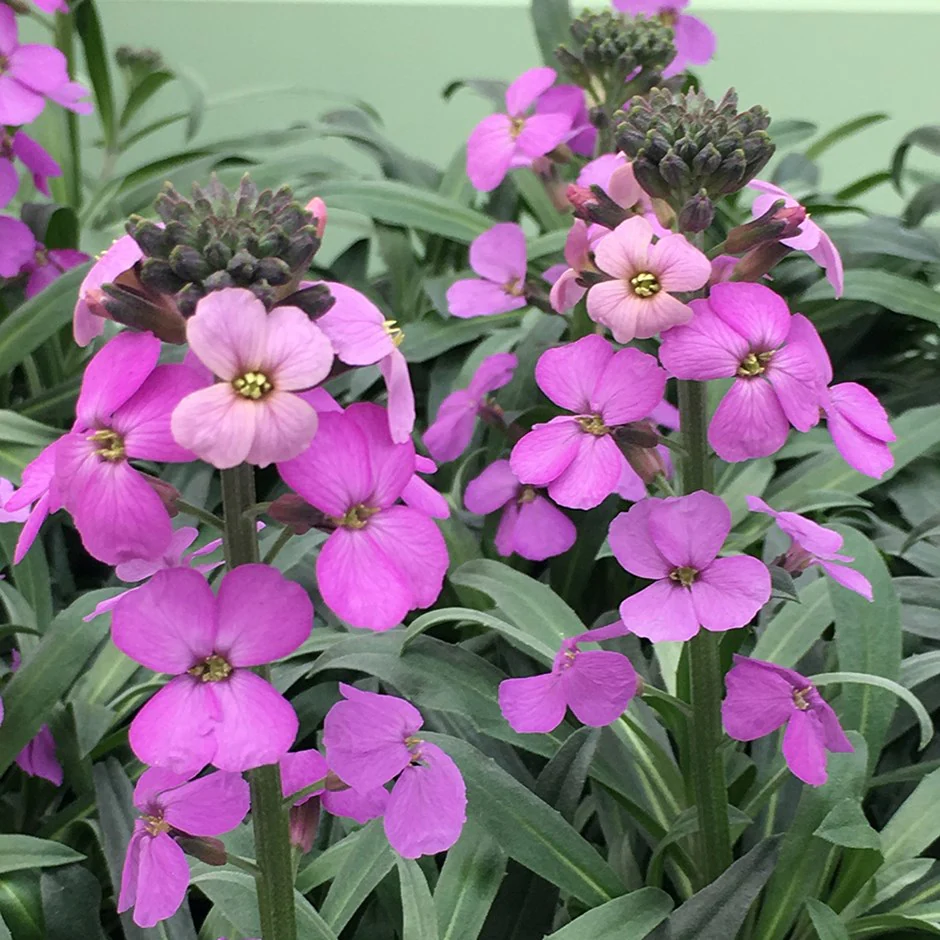 | 45cm X 50cm | March to August | 'Bowles's Mauve' is a bushy evergreen perennial to 75cm, with narrow, dark grey-green leaves and erect racemes of rich mauve flowers 2cm in width. Shortlisted for the Chelsea Plant of the Centenary for the decade 1973-1982。 |
| Galanthus nivalis | common snowdrop | 雪滴花,雪花莲 | Outdoor |

|
15cm X 10cm | Flower Time |
Own it!
G. nivalis is a perennial to 15cm, with narrow, grey-green leaves and solitary, nodding, fragrant white
flowers 2.5cm in length, the inner segments marked with green at the tip.
|
| Kniphofia | Red-hot poker | 火炬花 | Outdoor |

|
100cm X 100cm | March to November |
Own it!
Kniphofia may be evergreen or herbaceous perennials, with linear or strap-shaped leaves and erect stems
bearing a dense raceme of tubular, usually pendent flowers.
|
| Rosmarinus officinalis | Rosemary | 迷迭香 | Outdoor |

|
100cm X 100cm | Mar - May |
Own it!
Easy to grow aromatic, evergreen shrub. Prefers poor, well-drained soil and may be used as a formal or
informal low hedge which should be trimmed after flowering.
|
| Digitalis purpurea | foxglove | 毛地黄 | Outdoor |

|
1.5m X 45cm | May - July |
Own it!
D. purpurea is a biennial or short-lived perennial, freely self-sowing, with a rosette of softly hairy,
oval leaves and tall, one-sided spires of pendant, tubular, bright rosy-purple flowers 6cm long, spotted
within, in summer.
|
| Stachys byzantina | Lambs' ears | 绵毛水苏, 羊耳石蚕 | Outdoor |

|
15cm X 60cm | Flower Time | Lambs’ ears, Stachys byzantina, is a well-known ground-covering perennial, grown for its soft, woolly foliage. Plants are particularly attractive to the solitary wool carder bee, Anthidium manicatum, which cards the fine hairs from the leaves to use as nesting material. |
| Ulex europaeus | common gorse | 荆豆 | 分类 |

|
1.5-2.5m X 1.5-2.5m | Spring, Winter | U. europaeus is a bushy evergreen shrub with very spiny much-branched stems and solitary coconut-scented bright yellow flowers 2cm in length, mainly in winter and spring, followed by slender black seed-pods. |
| Helleborus niger | Christmas rose | 黑根铁筷子 | Outdoor |

|
45cm X 45cm | Spring, Winter | H. niger is a semi-evergreen perennial to 30cm, with pedately lobed, leathery, dark green leaves and 1-3 pure white or pink-flushed white, bowl-shaped flowers up to 8cm in width. |
| Aconitum napellus | Monkshood | 欧洲乌头 | Outdoor |

|
1.2m X 50cm | June, July | A. napellus is an upright tuberous perennial to 1.5m tall, with deeply divided, dark green leaves and tall spires of violet-blue, hooded flowers in mid and late summer. |
| Pyrus communis 'Conference' | pear 'Conference' | 西洋梨 | Tree |

|
250cm X 250cm | Flower Time |
Own it!
Home-grown pears are far superior in flavour to anything you can
buy in the shops. What’s more, a much greater variety of
cultivars is available if you grow your own.
|
| Prunus domestica 'Victoria' | plum 'Victoria' | 欧洲李 | Tree |

|
250cm X 240cm | Flower Time |
Own it!
Named in honour of the much-loved British queen, Victoria Plum
is the UK's favourite plum variety by a mile – and deservedly
so!
|
| Malus domestica 'Braeburn' | apple 'Braeburn' | 苹果 | Tree |

|
2.5m X 2.5m | Flower Time |
Own it!
Braeburn’ in the most popular dessert apple in the UK.
Discovered in New Zealand in 1952, it is named after the orchard
where it was first grown. Malus are small to medium-sized
deciduous trees with showy flowers in spring and ornamental or
edible fruit in autumn; some have good autumn foliage colour
|
| Vaccinium corymbosum | Highbush Blueberry | 蓝莓 | Tree / Hedge |

|
1.5m X 1.0m | Flower Time |
Own it!
This mid to late season variety produces good crops of
deliciously sweet, deep blue berries with a lovely firm texture.
The fruits are borne in clusters in late July and August and
will often keep longer than many other varieties. Blueberry
‘Bluegold’ is a particularly attractive variety for its white
spring flowers, golden autumn foliage and yellow stems in
winter. With such good looks it will be equally at home in your
shrub borders, as well as the veggie plot or allotment. This
Blueberry variety is also self fertile so you won’t need a
second plant to pollinate it.
|
| Cornus | dogwood | 山茱萸 | Hedge |

|
2-3m X 2-3m | Flower Time |
Own it!
To get the best winter stem colour, you’ll need to cut off all
of the stems (coppice) annually in early spring, about 5cm (2in)
above ground level. Over time the base will form a permanent low
framework known as a stool.
|
| Euphorbia pulcherrima | poinsettia | 一品红，圣诞红 | Indoor |

|
0.1-0.5m X 0.1-0.5m | Flower Time | A favoured last-minute present for a forgotten aunt and sadly generally destined for the bin once the season is over. E. pulcherrima is a semi-evergreen shrub with large, bluntly toothed, ovate leaves and tiny yellow flowers with leaf-like bright red bracts, opening in winter。 |
| Hippeastrum 'Red Lion' | Amaryllis 'Red Lion' | 朱顶红 | Indoor |

|
25-90cm X 30cm | Winter to spring |
Own it!
Hippeastrum, or amaryllis, are most commonly grown as flowering
houseplants, and are often given as gifts at Christmas. The
bulbous plants hail from South Africa, and bear four to six
large flowers on a tall, light green hollow stem.
|
| Narcissus papyraceus 'Ziva' | Narcissus ‘Paperwhite Ziva’ | 纸白水仙 | Indoor / Outdoor |

|
40cm X 10cm | Winter | Highly scented. Will flower natually in spring but can be forced into flower for Christmas. |
| Phlomis russeliana | Turkish sage | 中文名 | Outdoor |

|
0.5-1m X 0.1-0.5m | May to September | Spreads well when happy, excellent as weed suppressing ground cover. Divide plants in spring. |
| Cedrus atlantica | Atlas cedar | 北非雪松 | Tree |

|
12m X 8m | Flower Time | Glauca Group are large evergreen conifers, at first conical, later developing a broad crown, with spreading branches bearing silvery blue-green needles to 2.5cm, long, and ovoid cones to 9cm. Variable, and good blue-leaved forms should be sought. |
| Hydrangea macrophylla | Mophead hydrangea | 绣球 | Outdoor |

|
120cm X 150cm | June - October |
Own it!
One of the results of a hydrangea's ability to change colour is
that identification of a particular variety can be difficult on
acidic soil as the plant may change colour completely if planted
somewhere else.
|
| Miscanthus sinensis | Chinese Silver Grass | 中国芒 | Outdoor |

|
2m X 1.2cm | Flower Time | Miscanthus sinensis ‘Malepartus’ is an attractive ornamental grass with fine, arching leaves with a distinctive central white stripe, which take on beautiful orange and red hues in autumn. In summer it bears spectacular red-brown, silky feathery blooms, which appear to glow in the evening light. Quick to establish, it’s perfect for a mixed ornamental border or gravel garden. |
| Cotinus coggygria | smoke tree | 黄栌，红叶树、烟树 | Tree |

|
5m X 5m | Spring -Autumn |
C. coggygria is a large, bushy, deciduous shrub to 5m, with
rounded leaves turning yellow, orange and red in autumn. Large
feathery inflorescences are buff at first, later greyish.
Propagate by semi-ripe cuttings in summer. Prune if necessary in winter or early spring. |
| Acer palmatum | Japanese Maple | 日本槭（qì ）树 / 鸡爪槭 / 日本红枫 | Tree |

|
4m * 8m | Flower in Spring, Foliage Spring-Autumn | A. palmatum is a variable small tree with small, deeply 5 to 7-lobed leaves often colouring well in autumn. Small red flowers in spring are followed by winged, red or green fruits |
| Lysimachia punctata | yellow loosestrife | 毛黄连花 | Outdoor |

|
60-90cm X 30-60cm | Jun - Sep | The tall stems carry spikes of cheerful, cupped, star shaped, bright yellow flowers sit amongst mid-green leaves. |
| Nigella damascena | love-in-a-mist | 黑种草 | Outdoor |

|
45cm X 25cm | Jul - Sep | N. damascena is an upright, bushy annual to 50cm, withfeathery foliage. Pale blue flowers 4cm across areborne in summer followed by decorative, inflated seed capsules |
| Polianthes tuberosa | tuberose | 晚香玉 | Outdoor |

|
60-90cm X 60-90cm | Summer | a deciduous tuberousperennial forming a rosette of narrow leaves to 40cm long, with an erect stem to 1.2m tall, bearing a loose spike of highly fragrant, double white flowers 4-6cm long in summer |
| Zantedeschia | Calla Lily | 马蹄莲 | Indoor/Outdoor | 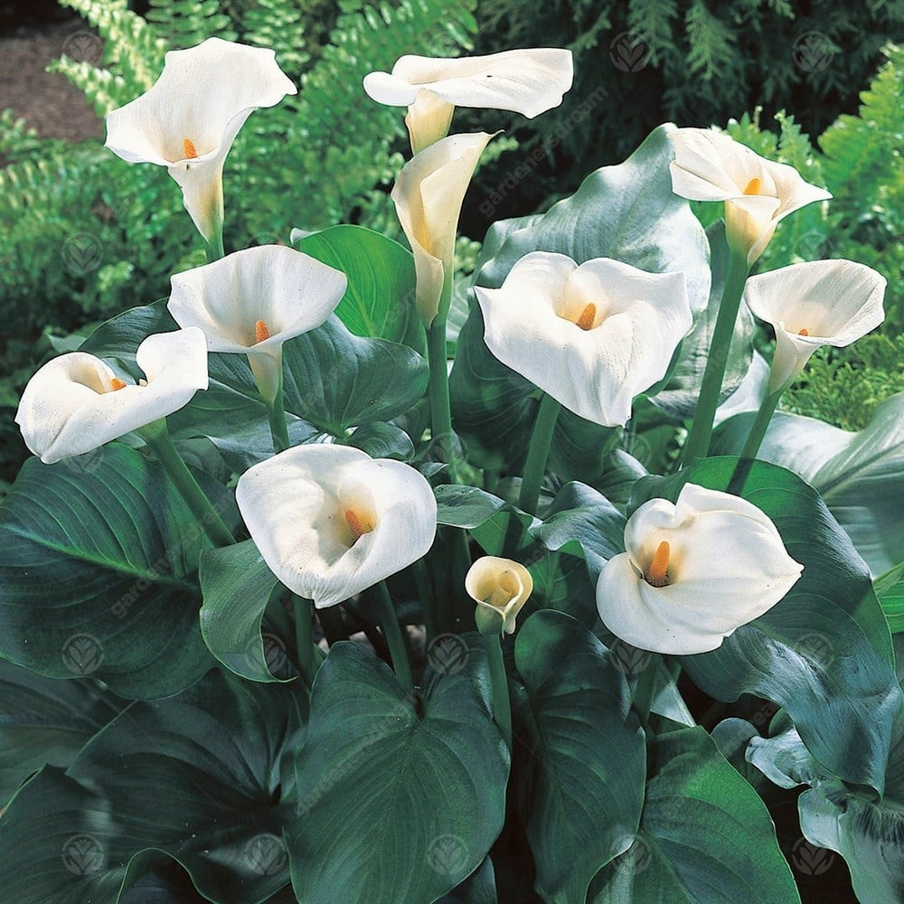 | 50cm X 35cm | Flower Time | As with planting, there’s not too much required for the care of calla lilies other than keeping them watered and fertilized. |
| Begonia | Begonia | 秋海棠 | Outdoor |

|
30cm X 30cm | Jun - Oct |
Own it!
It’s a tough, gorgeous plants that works in both sun and shade
conditions.
|
| pelargoniums | Geranium | 天竺葵 | Ourdoor |

|
30cm X 20cm | Jun - Oct |
Own it!
Large, shapely scarlet flowers that retain their form, without
shattering as they fade
|
| Salvia splendens | scarlet sage | 一串红 | Outdoor |

|
30-45cm X 30cm | Summer, Fall |
Own it!
S. splendens is a compact, upright perennial usually grown as an
annual, with oval leaves and dense spikes of tubular scarlet
flowers with large red bracts, over a long period in summer and
autumn
|
| Tagetes patula | French Marigold | 法国万寿菊 | Outdoor |

|
50cm X 30cm | Flower Time |
Own it!
Grow in moderately fertile, well-drained soil in full sun.
Deadhead regularly to prolong flowering. Water freely in dry
spells
|
| Mimosa pudica | Sensitive plant | 含羞草 | Indoor/Outdoor |

|
10cm X 50cm - 50cm*100cm | Flower Time |
Own it!
Patio & Container Plants
|
| Hoya carnosa | Wax plant | 球兰 | Indoor |

|
45cm X 45cm | May - Sep | 球兰花（Hoya carnosa）又名蜡兰、樱兰，石南藤。球兰花为萝藦科球兰属多年生常绿藤本植物。茎肉质，长达7米，节间有气根，攀附力较强。叶对生，厚肉质，全缘，叶脉不明显，近似蜡质，丰厚肥润，给人以充实富裕之感。 |
| Taraxacum officinale agg. | Dandelion | 蒲公英 | Wild Life |

|
|||
| Pteridium aquilinum | Bracken | 蕨 | Outdoor |

|
110cm X 140cm | Flower Time | Huge, widespread, ancient. Bracken is thought to be the most common plant in the world and is found on all continents except Antarctica. In the UK, they thrive in woodland. |
| Lavandula angustifolia ‘Hidcote’ | English lavender | 薰衣草 | Outdoor |

|
60cm X 75cm | July to October | Lavandula angustifolia 'Hidcote' AGM is a favourite English variety, famed for its nectar-rich, voilet-purple flower spikes tha tare superb for drying and using to add flavour to biscuits and cakes. It has a neat and bushy habit, makes a wonderful aromatic hedge and thrives in pots on a bright and sunny patio. The flowers are also adored by bees and other pollinating insects. |
| Camellia-japonica | Camellia japonica, common camellia, Japanese rose | 山茶花 | Tree |

|
4m X 3m | Feb - Apr |
Own it!
Purchased April 2021
|
| Begonia-Marginata | Begonia Marginata | 秋海棠 | Ourdoor |

|
25cm X 30cm | June - Sep |
Own it!
Purchased April 2021.
|
| Paeonia-'Coral-Charm' | Peony 'Coral Sunset' | 芍药 | Outdoor |

|
85cm X 85cm | late Spring, Summer |
Own it!
Purchased in April 2021.
|
| Paeonia-suffruticosa-'Taiyo' | Japanese Tree Peony 'Taiyo' | 芍药树 | Tree |

|
150cm X 150cm | Flower Time |
Own it!
Purchased April 2021. Grows to 150cm in 10-20 years.
|
| Myrrhis odorata | sweet cicely | 茉莉芹 | Wild Life |

|
1.2m Height | Flower Time | Aniseed scented perennial with bright green leaves and white flowers |
| Tulipa 'Dordogne' | Tulip 'Dordogne' | 郁金香 | Outdoor |

|
60cm X 15cm | Late April to May | Single late tulips. |
| Alcea rosea 'Chaters Double Mixed' | Hollyhock | 蜀葵 | Outdoor |

|
240cm Height | Jun-Aug |
Own it!
Paeony-like double pompon blooms arrayed along the tall, elegant
spires in a lovely range of colours.
|
| Phaseolus coccineus 'Enorma' | bean (runner) 'Enorma' | 荷包豆, 花豆，大红豆 | Vegetables |

|
Flower Time |
Own it!
This runner bean produces some of the longest, most beautiful
pods of any British bean plant with a superb flavour to match.
|
|
| Magnolia stellata | Magnolia | 玉兰 | Tree | 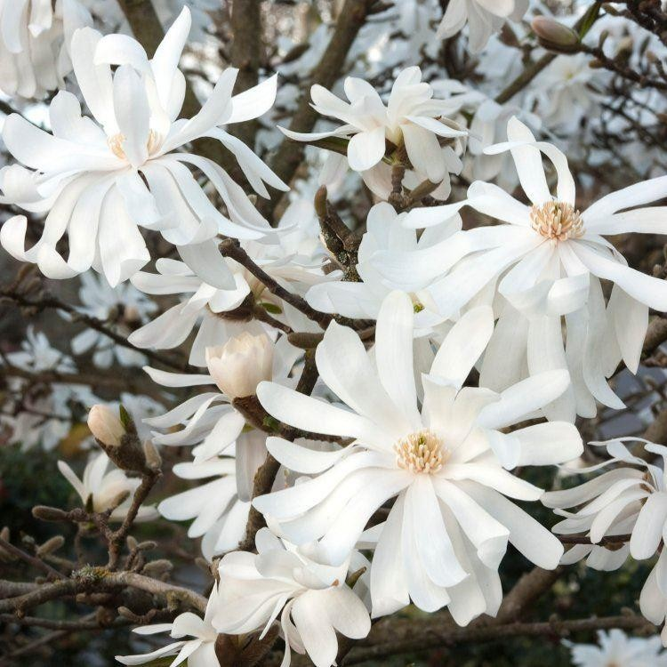 | 3m X 4m | Spring |
Own it!
M. stellata is a slow-growing medium-sized deciduous shrub of broadly rounded habit. Leaves narrowly obovate. Flowers white, to 10cm in width, with up to 18 narrowly oblong, spreading white tepals, in early spring
|
| Olea-europaea | Common Olive | 橄榄 | Tree/Hedge |

|
Flower Time | Notes | |
| Schlumbergera | Christmas cactus | 蟹爪兰 | Indoor | 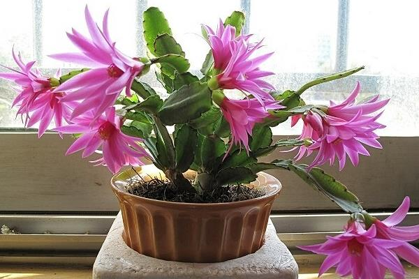 | 40cm X 80cm | Nov-Jan |
Own it!
They flower from late November to late January, they give a
wonderful Christmas display or are an ideal Christmas gift.
|
| Cyclamen-hederifolium | Ivy Leaved Cyclaman | 仙客来 | Indoor, Outdoor |

|
10-50cm X 10-50cm | Flower Time |
Own it!
C. persicum is a winter or spring-flowering tuber, growing to
10-20cm in height. Heart-shaped, dark-green leaves have silver
markings. Fragrant white or pink flowers with petals swept
upwards have carmine mouths
|
| Delphinium | Larkspur | 大花飞燕草，高花翠雀 | Outdoor |

|
1.5-2m High | Jun-Aug, following year |
Own it!
Grow plants closely together to help support each other.Renowned
for their clear colours and commanding presence, delphiniums are
possibly the ultimate early summer perennial and there are
plenty of varieties to choose from
|
| Salvia | Sage | 鼠尾草 | Herb |

|
45-90cm X 30-90cm | Flower Time |
Own it!
|
| Tradescantia x andersoniana-'Isis' | Spider Wort | 紫露草/紫鸭跖草 | Outdoor |

|
30-45cm X 38-45cm | Flower Time |
Own it!
Grow in fertile, moist soil in full sun or partial shade. May
need staking
|
| Echium webbii | Bugloss | 篮蓟属 | Outdoor |

|
1.5m X 75cm | Flower Time | Notes |
| x Graptoveria ‘Titubans’ | Porcelain Plant | 白牡丹 | Indoor |

|
Flower Time |
Own it!
An easy to grow plant. Looks great in a terrarium or other
succulent planter.
|
|
| Silene latifolia | White Campion | 白花蝇子草 | Wild Life | 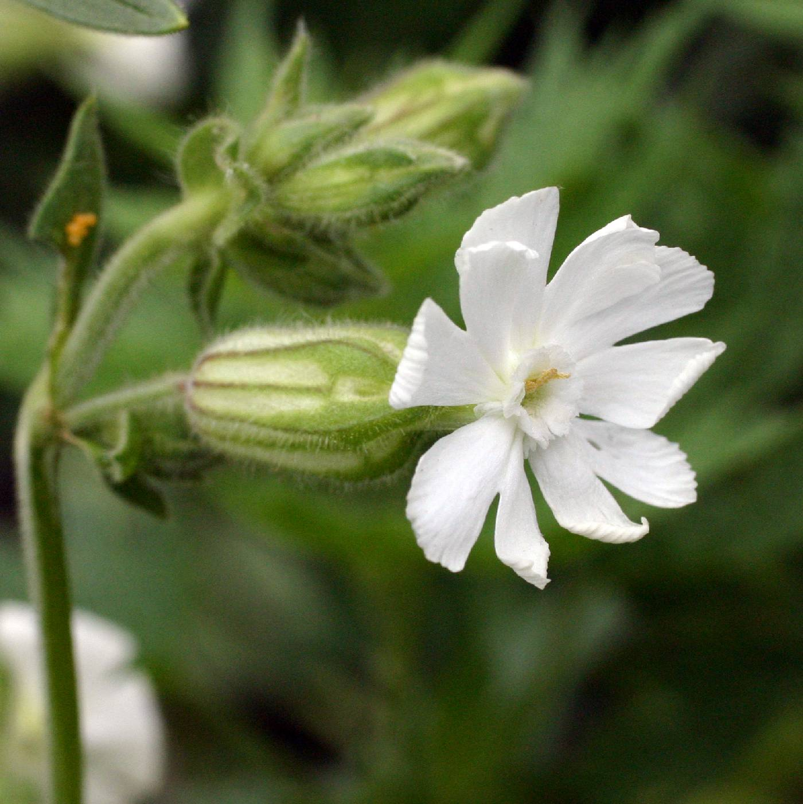 | up to 1m High | May to October | White campion can be found in hedgerows. |
| Lilium 'Purple Prince' | Giant Lily Purple Prince | 百合 | Outdoor |

|
2m X 40cm | Flower Time |
Own it!
'Purple Prince' is a vigorous, erect, bulbous perennial with
sturdy stems bearing whorled, elliptic, glossy, dark green
leaves and, in summer, large, fragrant, bowl-shaped, purple to
dark magenta flowers with yellow throats.
|
| Gladiolus murielae | Abyssinian Sword-Lily, Peacock lily, Peacock Orchid | 唐菖蒲 | Outdoor |

|
1m X 40cm | Aug-Oct | The Victorians loved Acidanthera murielae (a cousin of the gladiolus) for cut flowers and it's easy to see why. It has a wonderful scent and lasts brilliantly in the vase. |
| Anemone coronaria De Caen Group | garden anemone | 欧洲银莲花 | Outdoor | 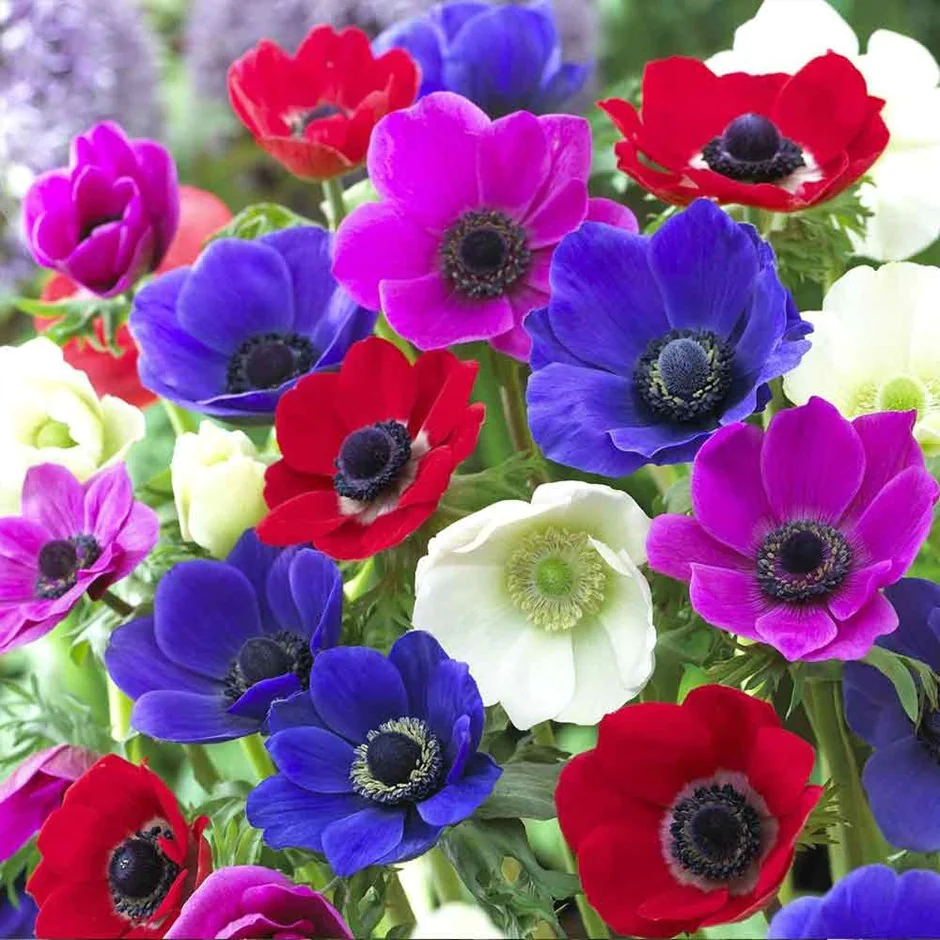 | 25-60cm X 15-22cm | Spring |
Own it!
De Caen Group are tuberous perennials with finely-dissected,
palmate leaves and red, blue-violet or white flowers which
appear from March to April
|
| Hypochaeris-radicata | Cat's ear, Australian cape weed, California dandelion | 猫儿菊 | Wild Life |

|
30cm X 30cm | May-Sep | A perennial that makes a good meadow component. Rich yellow flowers and dandelion-like seed heads. |
| Leucanthemum superbum 'Crazy Daisy' | Shasta Daisies | 大滨菊 | Outdoor |

|
60cm X 45cm | Jun-Sep | The frilly blooms of this shasta daisy are a magnet for pollinators. |
| Coreopsis grandiflora 'Golden Joy' | tickseed 'Early Sunrise' | 大花金鸡菊, 大花波斯菊 | Outdoor |

|
45cm X 40cm | Jun-Sep | A compact coreopsis that is ideal for the front of borders. |
| Lavandula-angustifolia-'Munstead' | Lavender 'Munstead' | 薰衣草 | Herb |

|
45cm X 60cm | Flower Time |
Own it!
'Munstead' is a compact evergreen shrub, to 45cm tall, with
narrow, grey-green foliage and spikes of small, highly-fragrant,
blue-purple flowers in mid to late summer
|
| Cornus alba L. | red-barked dogwood | 山茱萸 | Hedge |

|
250cm X 250cm | Flower Time |
Own it!
Propagate by hardwood cuttings
|
| Veronica persica | Common Field Speedwell | 阿拉伯婆婆纳 | Outdoor |

|
Flower Time |
Own it!
Common Field-speedwell can be found in flower every month of the
year but is at its peak between June to September.
|
|
| Euphorbia amygdaloides 'robbiae' | Wood Spurge | 大戟 | Outdoor |

|
70cm X 1m | Flower Time | Always wear gloves when working with euphorbias. The milky sap is a skin irritant. |
| Euphorbia polychroma / Euphorbia epithymoides | Cushion spurge, many coloured spurge | 大戟 | Outdoor |

|
60cm X 40cm | Flower Time | Notes |
| Pelargonium 'Summer Twist' | Pelargonium | 天竺葵 | Outdoor |

|
40cm X 40cm | Flower Time | A brand-new mix of pelargonium geraniums with clusters of flowers in a striking combination of red and white. The delightfully named ’Summer Twist’ will give you a succession of unique blooms from early summer until autumn, making this an essential addition to your garden borders, pots, baskets and balcony displays. |
| Eryngium x zabelii ‘Big Blue’ | Sea Holly | 海滨刺芹 | Outdoor |

|
90cm X 60cm | Flower Time | Eryngium zabelii ‘Big Blue’ is a versatile perennial that produces large spiky steely-blue flowers that rise above the spiny foliage in summer. Perfect for sunny boarders or containers. |
| Nemesia | Nemesia | 中文名 | Outdoor |

|
Flower Time |
Own it!
s
|
|
| Sarracenia | Pitcher Plants | 瓶子草 | Outdoor |

|
Flower Time | Fearsomely efficient flycatchers and easy for beginners to grow | |
| Viola-'Rebecca' | Viola 'Rebecca' | 堇菜属 | Outdoor |

|
15cm X 20cm | Flower Time | The scented flowers, held on long stems, are pale cream with slightly frilly edges flecked with violet. |
| Viola-'Nora' | Viola 'Nora' | 堇菜属 | Outdoor |

|
15cm X 20cm | Flower Time | An unusual bicolour, with rosy purple upper petals, yellow lower petals and a lovely scent. |
| Viola-‘Etain’ | Common Name | 堇菜属 | Outdoor |

|
15cm X 20cm | Flower Time | A delightful ‘old-fashioned’ viola with neat rounded petals of a soft creamy-yellow, outlined in soft blue. Very floriferous and highly scented. |
| Viola cornuta ‘Victoria’s Blush’ | Viola ‘Victoria’s Blush’ | 堇菜属 | Outdoor |

|
15cm X 20cm | Flower Time | This vigorous variety has jaunty, rosy lilac flowers and loves a sunny spot. |
| Akebia quinata | Chocolate vine | 五叶木通 | Outdoor |

|
10m X 2cm | Flower Time | Can get quite carried away so may need cutting back after flowering. Propagate by layering or summer cuttings. |
| Digitalis x hybrida 'Pink Panther' | Foxglove | 毛地黄 | Outdoor |

|
70cm X 40cm | Flower Time |
Own it!
Hardy, reliable & will flower year after year.
|
| Agapanthus africanus 'Twister' | African Lily | 百子莲 | Outdoor |

|
60cm X 50cm | Flower Time | Blue and white trumpet-shaped blooms form large, globe-like clusters which are held on strong stems above strap-shaped foliage from July to September. Perfect for planting in pots and excellent as cut flowers. |
| Epimedium × perralchicum ‘Frohnleiten’ | Common Name | 淫羊藿属 | Outdoor |

|
30cm X 60cm | Flower Time | Shelter from both cold winds and direct sunshine. Divide plants in autumn. No need to cut back unless leaves looking very tired. |
| Erythronium-californicum | Fawn lily | 猪牙花 | Outdoor |

|
30cm X 30cm | Flower Time | Plant bulbs in autumn. Easy to grow but don't let the soil dry out. Divide clumps after flowering. |
| Hosta ‘Barbara Ann’ | Hosta | 玉簪属 | Outdoor |

|
60cm X 90cm | Flower Time |
Own it!
Large leaved variety with a strong white edge. Watch out for
slugs and snails - a slug hunt at dusk with a torch and a bucket
can be very rewarding.
|
| Lamprocapnos spectabilis | Bleeding heart, lyre flower, lady-in-a-bath | 中文名 | Outdoor |

|
60cm X 60cm | Flower Time | Best inpartial shade. Divide in spring orpropagate from root cuttings in winter. |
| Magnolia × brooklynensis 'Yellow Bird' | Yellow Lily Trees | 黄木兰 | Tree |

|
5m X 3m | Apr - May |
Own it!
'Yellow Bird' _ 'Yellow Bird' is a large, vigorous, conical, deciduous tree with ovate to elliptic, dark green leaves and goblet-shaped, yellow flowers that bloom as the leaves emerge in spring.
|
| Daucus carota 'Chantenay' | Carrot | 胡萝卜 | Vegetables |

|
Flower Time | Notes | |
| Cosmos bipinnatus 'Purity' | Cosmos | 波斯菊 | Outdoor |

|
Flower Time |
Own it!
|
|
| Tulipa 'Ballerina' | Tulip 'Ballerina' | 郁金香 | Outdoor |

|
45cm X 5cm | Flower Time | Looks particularly good with Tulipa 'Spring Green' and Tulipa 'Queen of Night' |
| Tulipa ‘Queen Of Night’ | Tulip ‘Queen Of Night’ | 郁金香 | Outdoor |

|
Flower Time | Notes | |
| Tulipa 'Spring Green' | Tulip 'Spring Green' | 郁金香 | Outdoor |

|
Notes | ||
| Prunus serrulata 'Kanzan' | Cherry 'Kanzan' | 山樱花 | Outdoor |

|
10m X 10cm | Flower Time | This is a great tree for a medium sized garden: the followers are followed by fresh leaves which are a bronzy colour when young, and turn well in the autumn. Prune in summer if you need to maintain shape. Plant with lots of well rotted compost. |
| Anemone blanda 'Charmer' | winter windflower | 银莲花 | Outdoor |

|
10cm X 20cm | Flower Time |
Own it!
Plant tubers in autumn afater soaking them overnight. Good in
pots or naturalised under trees and shrubs.
|
| Primula 'Blue Lace Mary' | Primula, Primrose | 报春花 | Outdoor |

|
25cm X 20cm | Flower Time |
Own it!
Beautiful detailing on petals so best in a pot so more easily
seen. Propagate by division in spring.
|
| Tulipa saxatilis 'Lilac Wonder' | Common Name | 郁金香 | Outdoor |

|
25cm X 10cm | Flower Time |
Own it!
Delightful little species tulip - more reliably perennial than
larger varieties. Plant bulbs late autumn.
|
| Forsythia × intermedia 'Lynwood Variety' | Forsythia | 连翘 | Hedge |

|
2.5m X 2.5cm | Flower Time |
Own it!
They prefers to be freestyle, not squeezed into small front
gardens close to path.
|
| Viola x wittrockiana ‘Matrix Blue Frost’ | Pansy Matrix™ Blue Frost | 大花三色堇, 紫罗兰 | Outdoor | 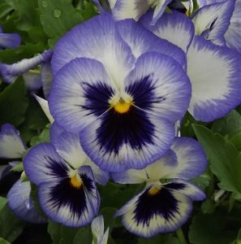 | 10cm X 10cm | Flower Time |
Own it!
There are so many different varieties of winter pansy - and all
of them perfect for an early spring container.
|
| Narcissus-‘Tête-à-tête’ | daffodil 'Tête-à-tête' | 黄水仙 | Outdoor |

|
20cm X 5cm | Flower Time |
Own it!
Reliable and popular dward variety. Excellent in pots, window
boxes or en masse in borders.
|
| Helleborus-argutifolius-'Silver-Lace' | Hellebore | 齿叶铁筷子 | Outdoor |

|
60cm X 40cm | Flower Time | Evergreen perennial. Cut off old leaves as flowers emerge. Propagate from seed when ripe. |
| Bellis perennis ‘Tasso White’ | Daisy | 雏菊 | Outdoor |

|
10cm X 15cm | Flower Time | Great plant for winter bedding. Deadhead regularly to prolong flowering. Not great in very cold gardens. |
| Muscari armeniacum | Grape Hyacinth | 葡萄风信子 | Outdoor | 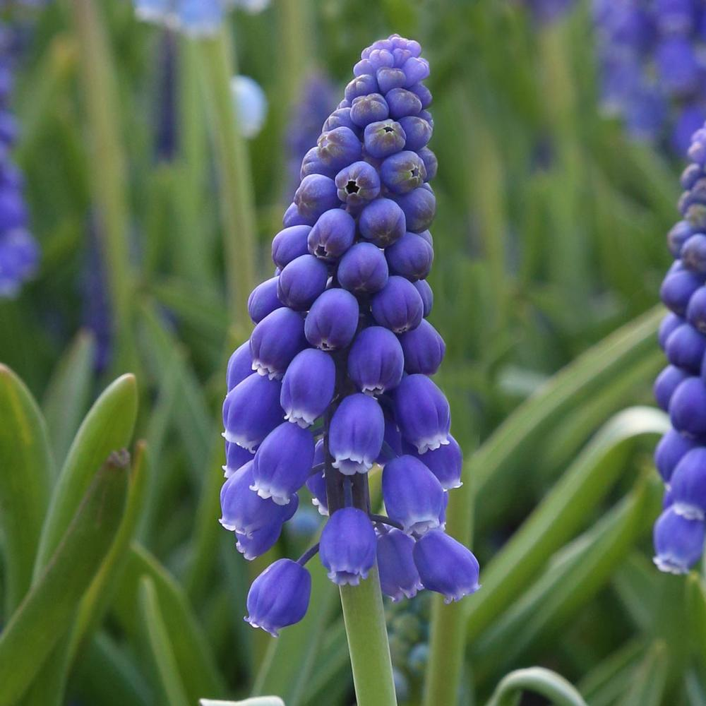 | H X S | Flower Time |
Own it!
Flowers: late March, Apr, May
|
| Berberis thunbergii | Japaneses barberry | 红叶小檗 | Hedge |

|
H X S | Flower Time | Notes |
| Begonia-Double-White | Begonia | 秋海棠 | Outdoor | 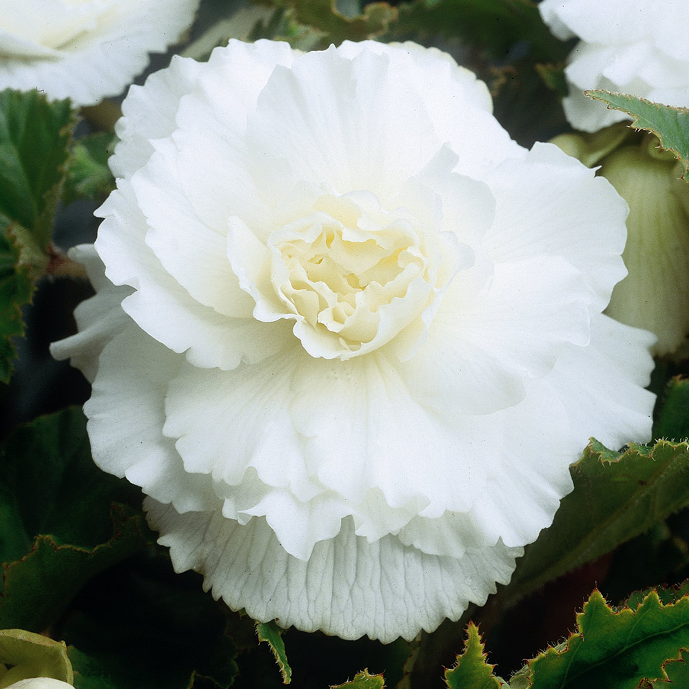 | H X S | Flower Time |
Own it!
2021, big pot
|
| Freesia | Freesia single White | 小苍兰属 | Outdoor | 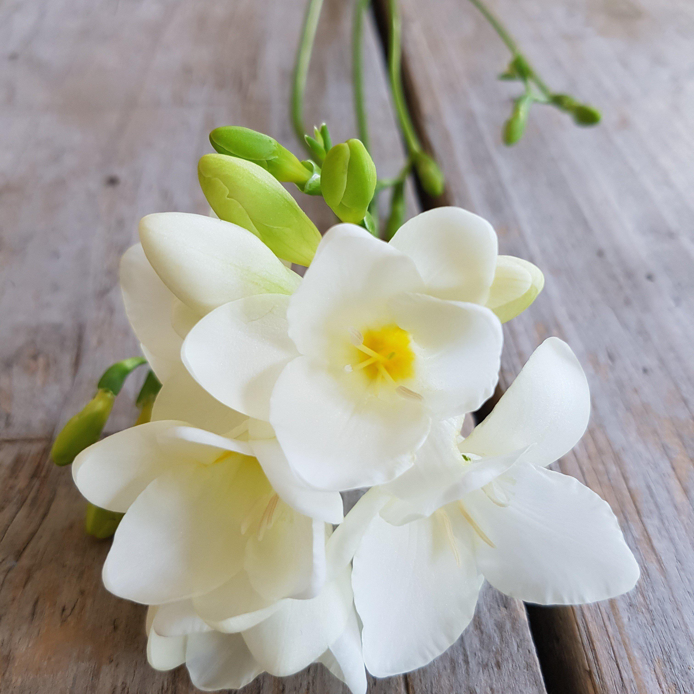 | H X S | Flower Time |
Own it!
2021, big pot
|
| Triteleia laxa 'Queen Fabiola' | Grassnut, triplet lily, Starflower, Wild Hyacinth | 中文名 | Outdoor | 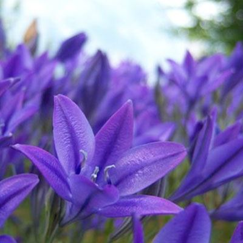 | H X S | Flower Time |
Own it!
2021, big pot
|
| Dahlia 'Lavender Perfection' | Dahlia 'Lavender Perfection' | 大丽花， 大丽菊 | Outdoor |

|
H X S | Flower Time |
Own it!
2021, big pot
|
| Dahlia hortensis | Dahlia Mignon | 天竺牡丹， 大丽花 | Outdoor |

|
H X S | Flower Time |
Own it!
|
| Laburnum | Laburnum， Golden Chain | 毒豆 | Tree |

|
H X S | Flower Time | Notes |
| Agapanthus | African lily | 百子莲属 | Outdoor |

|
H X S | Flower Time | Notes |
| Jasminum | Jasmine | 茉莉 | Outdoor | 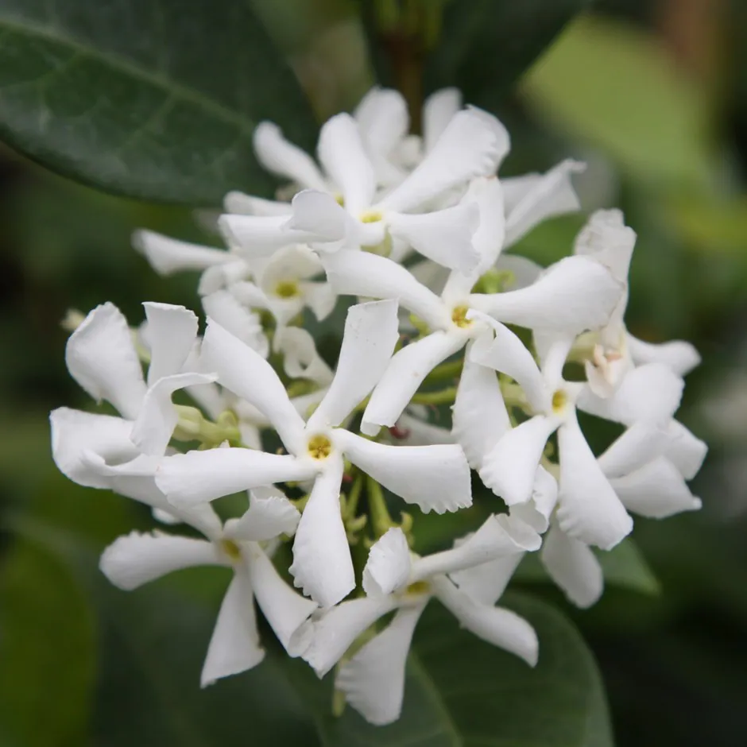 | H X S | Flower Time |
Own it!
|
| Echinacea purpurea | cone flower, Rudbeckia purpurea | 紫锥花 | Outdoor | 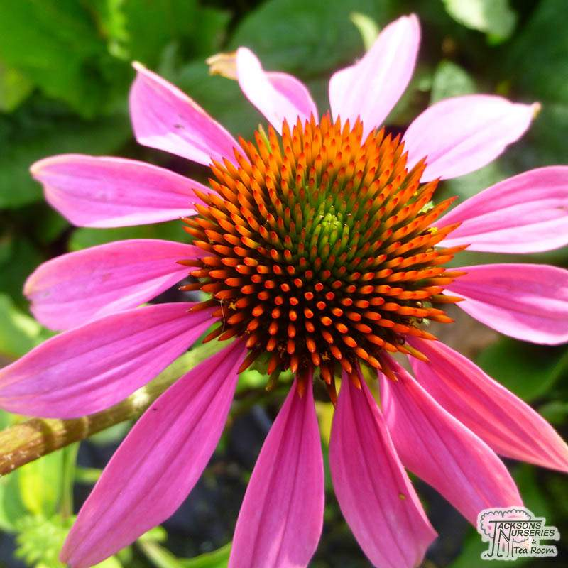 | H X S | Flower Time |
Own it!
|
| Forsythia | Forsythia | 连翘 | Hedge | 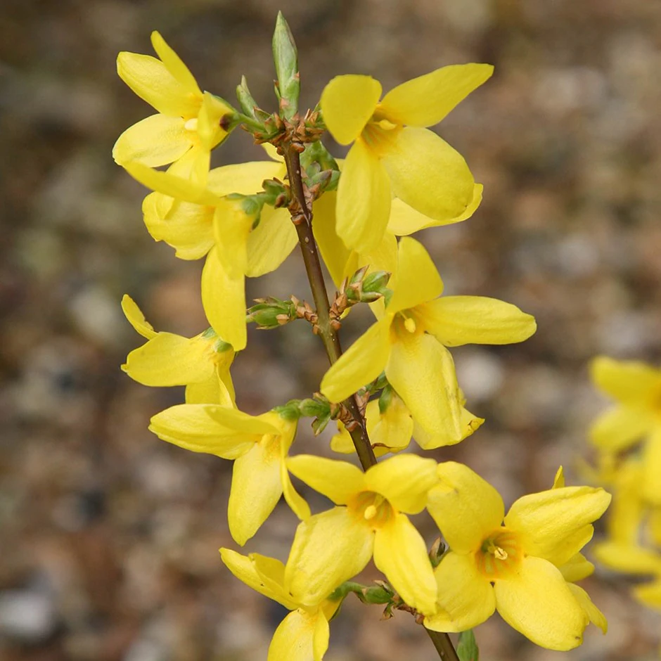 | H X S | Flower Time |
Own it!
|
| Lupins | Lupin | 鲁冰花，羽扇豆 | Outdoor | 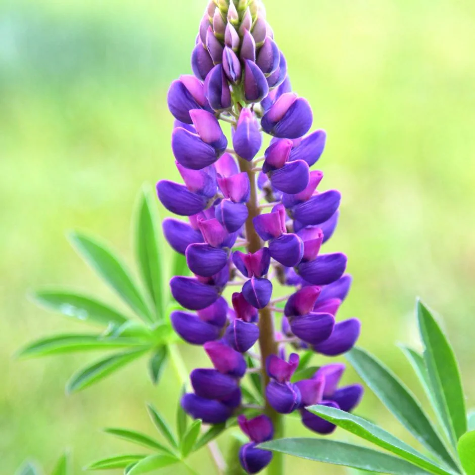 | H X S | May-July |
Own it!
|